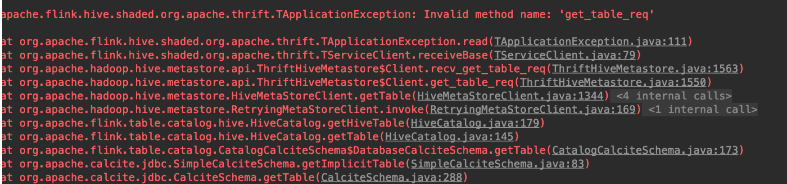

引言
flink 是新一代的流式计算引擎，在 flink 的数据抽象里，数据都是流（stream），批数据就是有界的流（bounded stream），是流的特例，而 spark 所有的数据都是批数据（batch），spark 处理流数据是把流当作微批（micro batch）来处理，只能达到秒级别的准实时性。在数据处理的抽象程度上，flink 相比 spark 是更加先进的。当前许多公司已经用 flink 取代 spark streaming 和 storm 作为流计算引擎的首选。flink 目前正在高速发展中，接入更多的数据源，但是在 flink 的主分支上对 hive 的数据接入还没有完善的支持，只有一个没人维护的 hcatalog 模块，blink 作为阿里的一个内部分支，已经开始支持 hive 数据源引入，并且阿里将其贡献出来作为 flink 的一个分支，并且 7 月份 blink 的特性就会 merge 到 flink 1.9 的主分支中。
在 flink 1.9 release 之前，要想使用 flink 接入 hive 数据源只能使用 blink 分支，但是该分支只是阿里开源出来的一个 MVP 产品，在尝试使用时碰到了一些兼容性的问题，本文记录一下遇到的问题以及解决方案
Hive 1.x 兼容性
当尝试直接使用编译出来的 blink hive connector 去连接 hive 1.x 时，list table 报了如下错误

查看 blink 的依赖发现 blink 默认引入了 hive 2.3.4 的 metastore，而我们访问的是 hive 1.x。hive 从 1.x 到 2.x 大版本升级后应该是 thrift 接口方法发生了大的改变，导致高版本的 hive metastore 无法正常访问到低版本，还好 hive connector 这个模块涉及到的类并不多，因此萌生了手动降依赖的想法，并排查修改一些不兼容的方法。
这个跟着 ide compile 的提示来就行了
- 修改 hive metastore 版本为 1.2.1
- 修改 RetryingMetaStoreClient#getProxy 方法
- 去除 1.x 不涉及到的属性定义
具体的修改参见 DIFF TO BLINK
Hive varchar 适配
经过上述的修改基本上已经可以连上 hive 1.x 了，但是对于 varchar 类型的字段处理还有问题，如果数据里有有这个类型 hive connector 读数据的时候会报类型转换错误1
java.lang.ClassCastException: org.apache.hadoop.hive.common.type.HiveVarchar cannot be cast to java.lang.String
其原因在与 blink 分支甚至 flink 1.8 为止都不原生支持 varchar 类型，会将 hive varchar 类型转成 string 类型1
2
3
4
5
6
7
8
9
10
11
12
13
14
15
16
17
18
19
20
21
22
23
24
25
26
27
28
29
30
31
32
33
34
35
36
37
38
39
40
41
42
43
44## HiveMetadataUtil
/**
* Convert a hive type to Flink internal type.
* Note that even though serdeConstants.DATETIME_TYPE_NAME exists, Hive hasn't officially support DATETIME type yet.
*/
public static InternalType convert(String hiveType) {
// Note: Any type match changes should be updated in documentation of data type mapping at /dev/table/catalog.md
// First, handle types that have parameters such as CHAR(5), DECIMAL(6, 2), etc
if (isVarcharOrCharType(hiveType)) {
// For CHAR(p) and VARCHAR(p) types, map them to String for now because Flink doesn't yet support them.
return StringType.INSTANCE;
} else if (isDecimalType(hiveType)) {
return DecimalType.of(hiveType);
}
switch (hiveType) {
case serdeConstants.STRING_TYPE_NAME:
return StringType.INSTANCE;
case serdeConstants.BOOLEAN_TYPE_NAME:
return BooleanType.INSTANCE;
case serdeConstants.TINYINT_TYPE_NAME:
return ByteType.INSTANCE;
case serdeConstants.SMALLINT_TYPE_NAME:
return ShortType.INSTANCE;
case serdeConstants.INT_TYPE_NAME:
return IntType.INSTANCE;
case serdeConstants.BIGINT_TYPE_NAME:
return LongType.INSTANCE;
case serdeConstants.FLOAT_TYPE_NAME:
return FloatType.INSTANCE;
case serdeConstants.DOUBLE_TYPE_NAME:
return DoubleType.INSTANCE;
case serdeConstants.DATE_TYPE_NAME:
return DateType.DATE;
case serdeConstants.TIMESTAMP_TYPE_NAME:
return TimestampType.TIMESTAMP;
case serdeConstants.BINARY_TYPE_NAME:
return ByteArrayType.INSTANCE;
default:
throw new UnsupportedOperationException(
String.format("Flink doesn't support Hive's type %s yet.", hiveType));
}
}
可以看到 varchar 转成了 flink 中的 string 类型
更奇葩的是，当要获取一些序列化信息的时候，从 flink 的 string 类型无法还原 varhcar 的序列化信息了，信息在转化过程中失真了，最终导致 varchar 本应该使用 varchar 的序列化类确使用了 string 的序列化类，于是报了类型转化错误1
2
3
4
5
6
7
8
9
10
11
12
13
14
15
16
17
18
19
20
21
22
23
24
25
26
27
28
29
30
31
32
33
34
35
36/**
* Convert Flink's internal type to String for hive.
*/
public static String convert(InternalType internalType) {
if (internalType.equals(BooleanType.INSTANCE)) {
return serdeConstants.BOOLEAN_TYPE_NAME;
} else if (internalType.equals(ByteType.INSTANCE)) {
return serdeConstants.TINYINT_TYPE_NAME;
} else if (internalType.equals(ShortType.INSTANCE)) {
return serdeConstants.SMALLINT_TYPE_NAME;
} else if (internalType.equals(IntType.INSTANCE)) {
return serdeConstants.INT_TYPE_NAME;
} else if (internalType.equals(LongType.INSTANCE)) {
return serdeConstants.BIGINT_TYPE_NAME;
} else if (internalType.equals(FloatType.INSTANCE)) {
return serdeConstants.FLOAT_TYPE_NAME;
} else if (internalType.equals(DoubleType.INSTANCE)) {
return serdeConstants.DOUBLE_TYPE_NAME;
} else if (internalType.equals(StringType.INSTANCE)) {
return serdeConstants.STRING_TYPE_NAME;
} else if (internalType.equals(CharType.INSTANCE)) {
return serdeConstants.CHAR_TYPE_NAME + "(1)";
} else if (internalType.equals(DateType.DATE)) {
return serdeConstants.DATE_TYPE_NAME;
} else if (internalType instanceof TimestampType) {
return serdeConstants.TIMESTAMP_TYPE_NAME;
} else if (internalType instanceof DecimalType) {
return String.format(DECIMAL_TYPE_NAME_FORMAT, ((DecimalType) internalType).precision(), ((DecimalType) internalType).scale());
} else if (internalType.equals(ByteArrayType.INSTANCE)) {
return serdeConstants.BINARY_TYPE_NAME;
} else {
throw new UnsupportedOperationException(
String.format("Flink's hive metadata integration doesn't support Flink type %s yet.",
internalType.toString()));
}
}
继续 debug 可以发现问题处在1
2
3
4
5
6
7
8# HiveTableInputFormat，MR 任务读取 HDFS 的数据指定的 input format
deserializer = (Deserializer) Class.forName(serDeInfoClass).newInstance();
Configuration conf = new Configuration();
// 在这里获取序列化器
SerDeUtils.initializeSerDe(deserializer, conf, properties, null);
// Get the row structure
oi = (StructObjectInspector) deserializer.getObjectInspector();
fieldRefs = oi.getAllStructFieldRefs();
根据 properties 获取序列化器，那么这个 properties 是哪里来的呢？进一步跟踪可以找到1
2
3
4
5
6
7
8
9
10
11
12
13
14
15
16
17
18
19
20
21# HiveTableSource
private Properties createPropertiesFromSdParameters(StorageDescriptor storageDescriptor) {
SerDeInfo serDeInfo = storageDescriptor.getSerdeInfo();
Map<String, String> parameters = serDeInfo.getParameters();
Properties properties = new Properties();
properties.setProperty(serdeConstants.SERIALIZATION_FORMAT,
serDeInfo.getParameters().get(serdeConstants.SERIALIZATION_FORMAT));
List<String> colTypes = new ArrayList<>();
List<String> colNames = new ArrayList<>();
List<FieldSchema> cols = storageDescriptor.getCols();
for (FieldSchema col: cols){
colTypes.add(col.getType());
colNames.add(col.getName());
}
properties.setProperty(serdeConstants.LIST_COLUMNS, StringUtils.join(colNames, ","));
// 这里设置了 column type，并且用的是 hive type 转化为 flink type 之后的 type，也就是这里信息失真了
properties.setProperty(serdeConstants.LIST_COLUMN_TYPES, StringUtils.join(colTypes, DEFAULT_LIST_COLUMN_TYPES_SEPARATOR));
properties.setProperty(serdeConstants.SERIALIZATION_NULL_FORMAT, "NULL");
properties.putAll(parameters);
return properties;
}
在 HiveTableSource 里设置了列的所有类型，但是这个类型已经是被 flink 转化过的类型，看样子我们找到源头了，所以只要我们设置这个类型为原始的 hive 类型问题就得到了解决。幸运的是，HiveTableSource 在构造的时候本身就提供了一个字段 hiveRowTypeString 表示 hive 里该表的原生类型，我们用它替换掉 properties 里的属性即可，具体的修改参考 DIFF TO BLINK
没想到这么明显的错误居然被阿里的人 push 上来了，甚至于本身就写了注释意识到类型不能用 flink 转化后的类型而应该用 hive 原生类型。这个故事告诉我们永远不要相信 todo 的约束力。MVP 版本不愧为 MVP 版本，根本不应该用在生产上。1
2
3
4// TODO: we should get StorageDescriptor from Hive Metastore somehow.
StorageDescriptor sd = createStorageDescriptor(jobConf, rowTypeInfo);
jobConf.setStrings(INPUT_DIR, sd.getLocation());
Properties properties = createPropertiesFromSdParameters(sd);
limit 失效问题
blink 的 api 相比 flink 还是有点出入的，在使用上有点要注意的
对于 hive 引入来说，需要设置1
env.setJobType(JobType.BATCH);
不然 sql 里的 limit 会导致任务挂住
遗留问题
即便做了这些修改，blink 读取 hive 数据源的时候，仍无法正确处理分区字段类型为非 string 类型的数据，在写 flink sql 的时候，无法将分区字段 select 出来作为一个新的列。这是因为 blink 在处理分区字段时候把所有的分区字段值都读成了 string（因为直接从文件夹路径读的数据值），但是元数据信息里保存的类型不是 string 的时候就会进行类型转换，而这个类型转换基本都会失败。但是如果不把分区字段 select 出来作为一个新的列，而是放在 where 条件里倒是没有关系
结语
flink 流处理方面确实很优秀，但是在数据源的兼容性上，离线的计算方面还是需要追赶 spark。flinlk 1.9 将在 7 月份发布，blink 特性会 merge 到主分支，提供 hive connector 和对低版本 hive 的兼容性，并且会重构类型系统原生支持 varchar 等类型。让我们静静期待吧。
最后，千万不要在生产上使用未经验证的解决方案